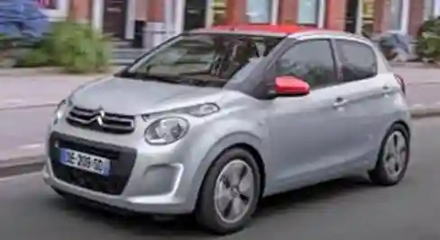
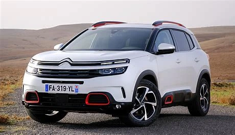
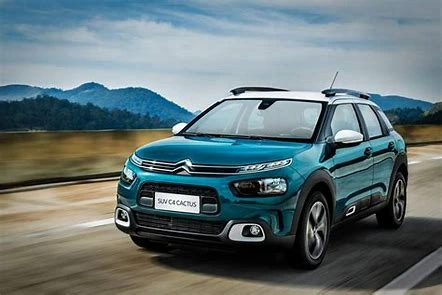
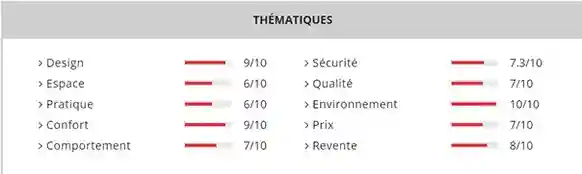

| Tableau montrant la diversité de Citroën | ||||||
|---|---|---|---|---|---|---|
| Belgique | Bruxelles-Forest : 1926-1980 (1 047 661 voitures assembles entre 1948 et 1980 plus environ 30 000 avant la guerre) | |||||
| Royaume-Uni | Slough : 1926-1966 (58 289 voitures assemblées) | |||||
| Italie | Milan : 1926-1935 | |||||
| Allemagne | Cologne : 1927-1935 (18 710 voitures assemblées) | |||||
| Pologne | Varsovie : 1930-1935 ; Nysa : 1995-2000 (C15) | |||||
| Autriche | Assemblage sous licence par le constructeur Gräf & Stift entre 1934 et 1936 | |||||
| Pays-Bas | Assemblage du Type H entre 1963 et 1972 (10 016 voitures assemblées) et du C-Crosser chez Nedcar entre 2009 et 2012 | |||||
| Tchéquie | Société commune entre PSA et Toyota produisant les Citroën C1 entre 2005 et 2022 | |||||
| Yougoslavie | Assemblage par Tomos entre 1960 et 1984 ; création de la société commune Cimos en 197 | |||||
| Grèce | Assemblage entre 1974 et 1983 (Baby Brousse sous le nom Namco Pony) | |||||
| Russie | Société commune entre PSA et Mitsubishi produisant des Citroën entre 2010 et 2022 | |||||
| Turquie | Filiale Tofas du groupe Fiat produisant le Citroën Nemo entre 2007 et 2017 | |||||
| Cambodge | Assemblage entre 1957 et 1959 (2CV Fourgonnette) | |||||
| Viet Nam | Assemblage entre 1970 et 1972 plus un dernier lot en 1985 (Dalat, version locale de la Baby Brousse) | |||||
| Indonésie | Assemblage entre 1979 et 1983 puis entre 1987 et 1994 | |||||
| Taïwan | Assemblage entre 1989 et 1995 (C15) | |||||
| Japon | Production par Mitsubishi entre 2007 et 2020 | |||||
| Australie | Assemblage entre 1960 et 1966 | |||||
| Chili | Assemblage entre 1963 et 1982 | |||||
| Mexique | Assemblage entre 1960 et 1964 | |||||
| Afrique du Sud | Assemblage entre 1959 et 1978 ; filiale établie en 1971 ; 30 327 voitures assemblées | |||||
| Côte d’Ivoire | Assemblage entre 1970 et 1978 (Baby Brousse) | |||||
| Dahomey | Assemblage entre 1966 et 1974 (2CV, Ami 6 et Dyane) | |||||
| Guinée Bissau | Assemblage entre 1979 et 1982 (Baby Brousse et FAF) | |||||
| Centrafrique | Assemblage entre 1980 et 1982 (Baby Brousse et FAF) | |||||
| Sénégal | Assemblage entre 1981 et 1983 (Baby Brousse, vendue sous le nom de Mehari, et FAF) | |||||
Diagnostique interne
Citroën est une entreprise réputée dans certains pays notamment en Europe, en Amérique du Sud ainsi qu'en Inde et comme toute entreprise elle possède des forces et des faiblesses. Pour pouvoir déterminer ces forces et faiblesses nous allons procéder à partie diagnostique externe nous traiterons.
Les Forces :
Ces innovations
Citroën a un a un fort héritage puisqu'elle a été fondée en 1919. Il a plus de 14 000 employés dans le monde. Citroën industrialise le premier modèle de la marque qui est la Citroën type A. Ce modèle est la première automobile européenne construite en série. La marque créée plus de 1,5 million de véhicules qui ont été produits en un an. Il a également dominé le Championnat du monde des rallyes
Citroën crée un système révolutionnaire qui est la suspension hydropneumatique permettant une sensation de « flottement » sur la route ainsi qu'une stabilité dans les virages. Citroën sait rester à l'avant-garde de la technologie offrant un confort à la conduite. Un modèle utilisant ce système : la Citroën DS.
Citroën mise sur le confort notamment avec le programme « Advanced Comfort » avec des suspensions spécifiques et des sièges optimisés.
Design audacieux
Le style des voitures Citroën se démarque dès le premier regard. Il combine de manière harmonieuse « la singularité et la simplicité », pour reprendre les mots de Pierre Leclercq, responsable du style de la marque. Entre les emprunts aux modèles emblématiques et la volonté de concevoir de nouvelles expériences, Citroën offre constamment des véhicules singuliers.
Large gamme de véhicules
Citroën offre une variété de modèles adaptés à tous les goûts, afin de satisfaire les besoins quotidiens de la famille. Les berlines élégantes, les monospaces confortables, les voitures électriques discrètes, les voitures compactes polyvalentes et pratiques. Citroën touche une large clientèle par sa variété de gamme de véhicules, ce qui fait de lui une force.
une petite citadine (C1)

C3 Aircross
C5 Aircross

Citroë C4 Cactus (boîte electrique)

Citroën Ami (voiture sans permis)
Les Faiblesses
Positionnement concurrentiel
Bien que Citroën soit une forte identité, la marque est souvent perçue comme une marque de « milieu de gamme » par rapport aux marques de luxe tels que Audi, Bmw ou des constructeurs plus généraliste comme Peugeot, Renault. Citroën veut maintenir sa réputation d’une marque avec des prix abordable et accessible à tout. Citroën émerge avec la marque DS Automobiles afin de conquérir le monde du luxe. Cette division accentuera l’idée que Citroën est une marque avec des prix abordable et moins tendances, tandis que DS a été renommée.
Fiabilité de la marque :
Par le passé, Citroën a déçu ses acheteurs en termes de fiabilité. En effet la marque a un manque de fiabilité électronique et mécanique de ses véhicules comme la Citroën C4 deuxième génération, avec les versions HDI, qui sont due au manque d’expertise sur les moteurs diésel de nouvelle génération. De manière similaire, le C4 Picasso de deuxième génération a connu une mauvaise performance en matière de fiabilité, affichant un bilan peu satisfaisant malgré sa grande popularité commerciale. L'apparition de la Citroën C5 1, à une époque où les nouveaux diesels étaient en difficulté, a également été très décevante en termes de service. Bien qu’il y ait eu des améliorations la marque garde des séquelles.
Voici un tableau représentatif de la baisse de Citroën :
| Evolution des marchés et marques: août 2024/ août 2023 | ||||||
|---|---|---|---|---|---|---|
| marché: | Citroën: | Peugeot: | DS: | Opel: | Fiat: | |
| France: | -24,32 | -45,13 | -25,37 | -44,51 | 620,82 | -44,79 |
| Italie: | -13,37 | -60,02 | -5,47 | -45,68 | -18,54 | -44,35 |
| Espagne: | -6,49 | -40,94 | -33,86 | -18,58 | -47,87 | -68,46 |
| Portugal: | -8,69 | -64,18 | -15,91 | -45,71 | -29,75 | -64,29 |
| Allemagne: | -27,83 | -21,35 | -16,88 | -11,11 | -17,14 | -52,3 |
| Angleterre: | -1,26 | -8,66 | 2,92 | 18,75 | -41,3 | -30,87 |
| Belgique: | -20,29 | -63,29 | -5,65 | -79,51 | -29,41 | -31,12 |
| TOTAL | -19,36 | -41,72 | -14,33 | -41,02 | -24,73 | -48,03 |
Les chiffres de ventes :
| Les chiffres de ventes | |||||||||||||
|---|---|---|---|---|---|---|---|---|---|---|---|---|---|
| Europe: mois de août 2024 | Europe: mois de août 2023 | ||||||||||||
| marché: | Citroën: | Peugeot: | DS: | Opel: | Fiat: | marché: | Citroën: | Peugeot: | DS: | Opel: | Fiat: | ||
| France: | 85 977 | 4 854 | 11 875 | 966 | 2495 | 1 458 | France: | 113 599 | 8 846 | 15 911 | 1 741 | 3 151 | 2 641 |
| Italie: | 69 121 | 1 281 | 3 648 | 176 | 2 012 | 4 756 | Italie: | 79 787 | 3 204 | 3 859 | 324 | 2 470 | 8 547 |
| Espagne: | 52 322 | 1 551 | 1 891 | 206 | 919 | 305 | Espagne: | 55 954 | 2 626 | 2 859 | 253 | 1 763 | 967 |
| Portugal: | 14 338 | 274 | 1 173 | 57 | 281 | 135 | Portugal: | 15 702 | 765 | 1 395 | 105 | 400 | 378 |
| Allemagne: | 197 322 | 2 981 | 4 875 | 192 | 12 142 | 4 057 | Allemagne: | 273 417 | 3 790 | 4 171 | 216 | 14 654 | 8 505 |
| Angleterre: | 84 575 | 1 551 | 3 203 | 76 | 3 265 | 663 | Angleterre: | 85 657 | 1 698 | 3 112 | 64 | 5 562 | 959 |
| Belgique: | 29 333 | 500 | 1 703 | 42 | 576 | 239 | Belgique: | 36 798 | 1 362 | 1 805 | 205 | 816 | 347 |
| TOTAL: | 532 988 | 12 992 | 28 368 | 1 715 | 21 690 | 11 613 | TOTAL: | 660 914 | 22 291 | 33 112 | 2 908 | 28 816 | 22 344 |
Par le manque d’innovation de la marque Citroën par rapport à ses concurrents, Citroën se retrouve en baisse. À l’aide du tableau ci-dessus, nous pouvons voir que Citroën en 2023 vend plus de 22 291, tandis qu’en 2024 il ne vend que 12 992, en quelque sorte il ne vend que la moitié des ventes de 2023. Citroën fait une baisse de -41,72% en 2024. La marque n’arrive pas à se faire connaitre en dehors de l’Europe notamment dans les pays en forte croissance, par son manque de réactivité. De plus, Citroën est mal étendu voir moins efficace dans certaines régions limitant à un certain marché potentiel.
Le tableau ci-dessous présente les votes exprimés sur la qualité de la marque Citroën :

source: latribuneauto.com